Problems & opportunities
Sales reps handle hundreds of customer records a day, but most of their time went into moving between pages instead of selling. Updating a lead, booking a meeting or adding a note meant opening several screens and repeating the same steps. And as the data grew, the information that mattered got harder to find.
I mapped how reps and managers work day to day, and four things stood out:
- Reps spend most of their time inside data tables.
- They search and filter far more often than they create new records.
- Customer details change all the time, so editing them should never break the flow.
- Every screen should work the same way, so there is nothing new to learn.
The challenge: keep a lot of data organized, and let reps finish everyday tasks in as few steps as possible.
What I did
I worked on every stage of the design process:
UX research
I mapped how reps and managers work each day and how information moves through the product.
User flows
I mapped the path from the lead table into a lead's profile, where updates, notes, calls and tasks happen.
UI design
I designed dense, data-heavy screens with a clear hierarchy, so the important information is always easy to spot.
Design system
I built the component library behind every screen: typography, colours, icons and components with all their states.
Interactive prototyping
I turned the main flows into clickable prototypes, so they could be tested before they were built.
Developer handoff
I prepared specs and production-ready components, so developers could build the screens quickly and accurately.
Sign in and the lead table
Reps spend most of their day in the lead table, and as the data grows it gets hard to read
One clear lead table with quick filters, saved views and actions on many leads at once
After signing in, reps land on the lead table. Each lead sits on one row with a colour-coded grade and status, filters narrow the list in a click, and selecting several leads lets a rep update or email all of them at once.

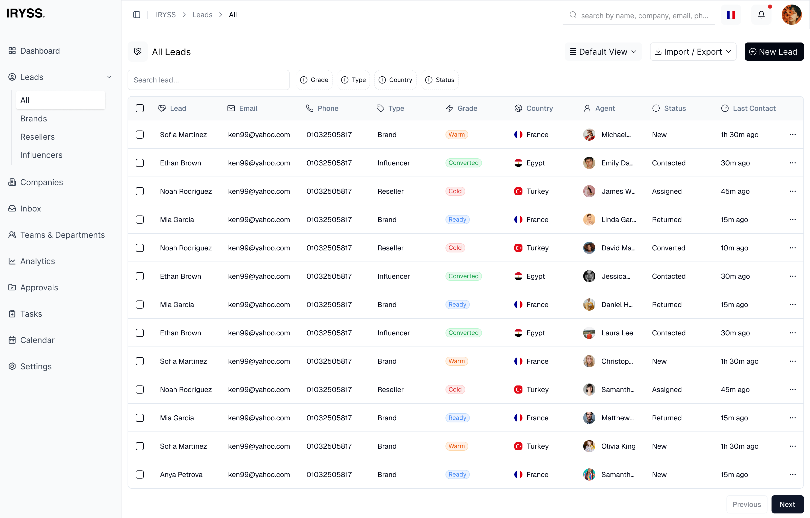
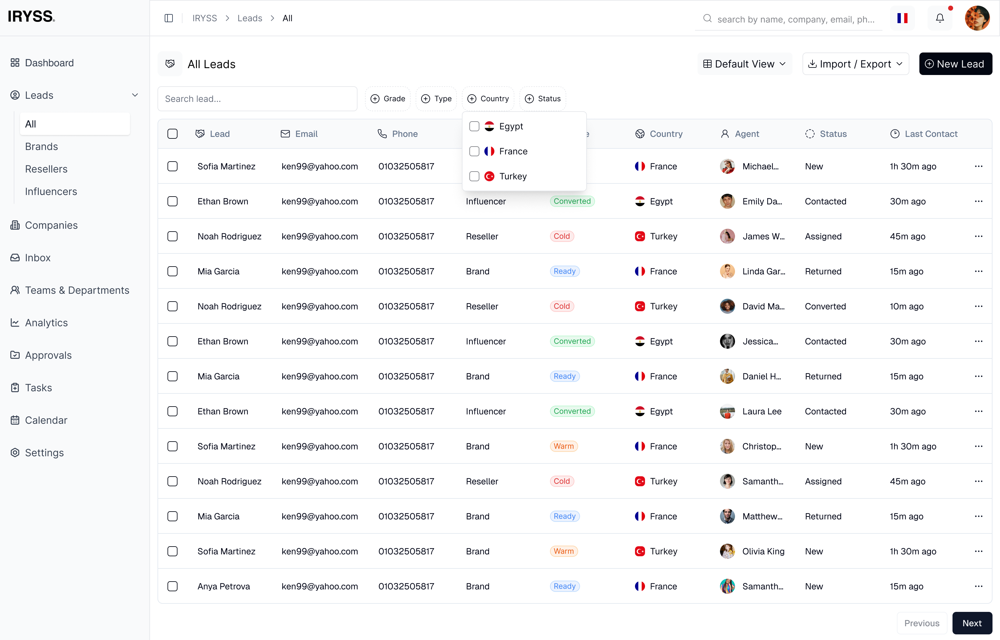
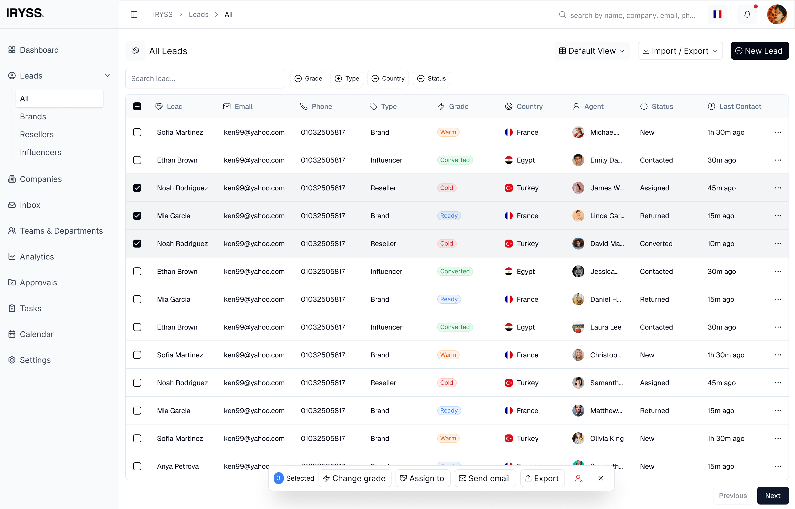
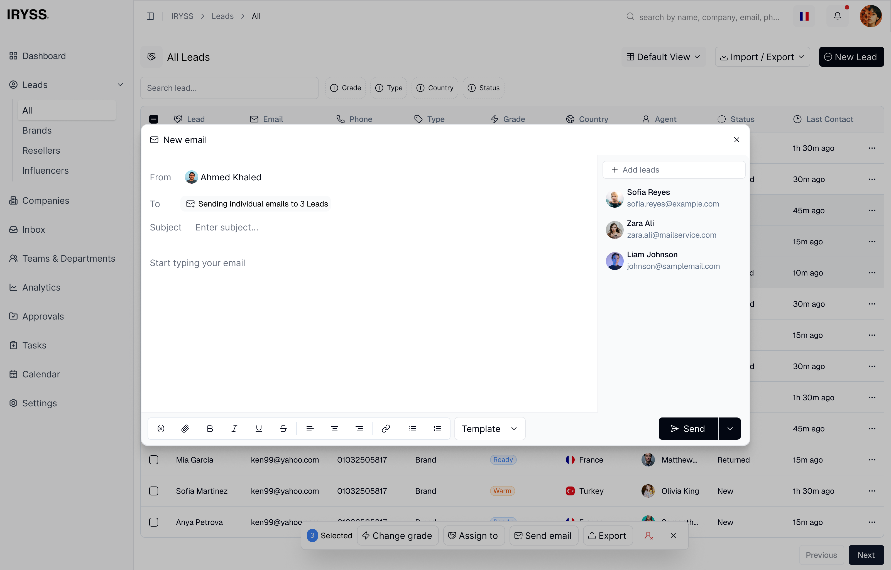
Lead profile
Updating a lead or adding a note meant opening several screens and repeating the same steps
One profile with the lead's details, activity, calls, meetings, notes and tasks, all editable in place
Clicking a lead opens its profile. The details sit on the left and the full activity on the right, so a rep can review recorded calls with their summaries, book a meeting, add a note or create a task without leaving the page.
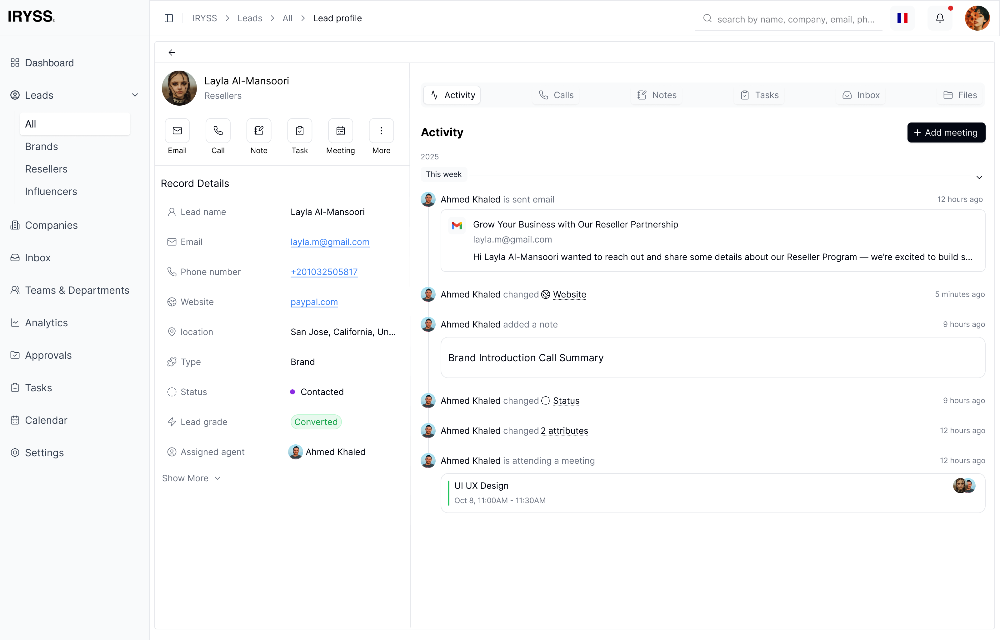
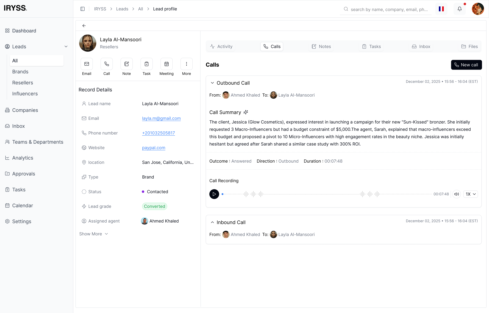
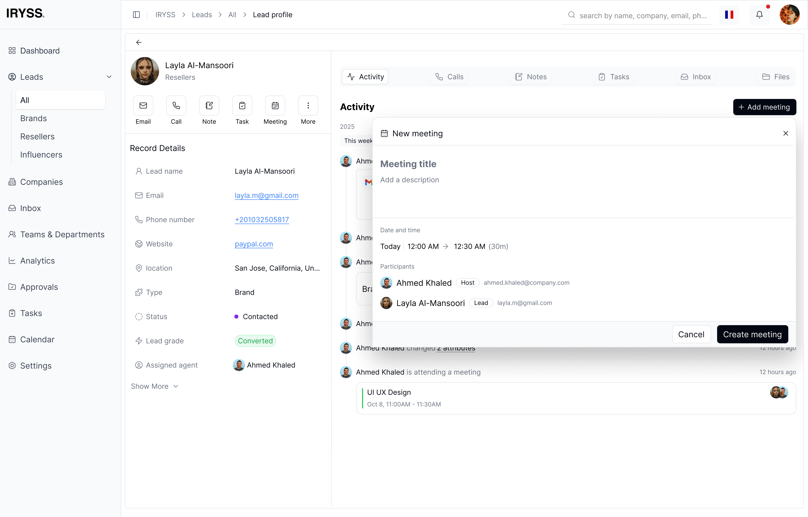
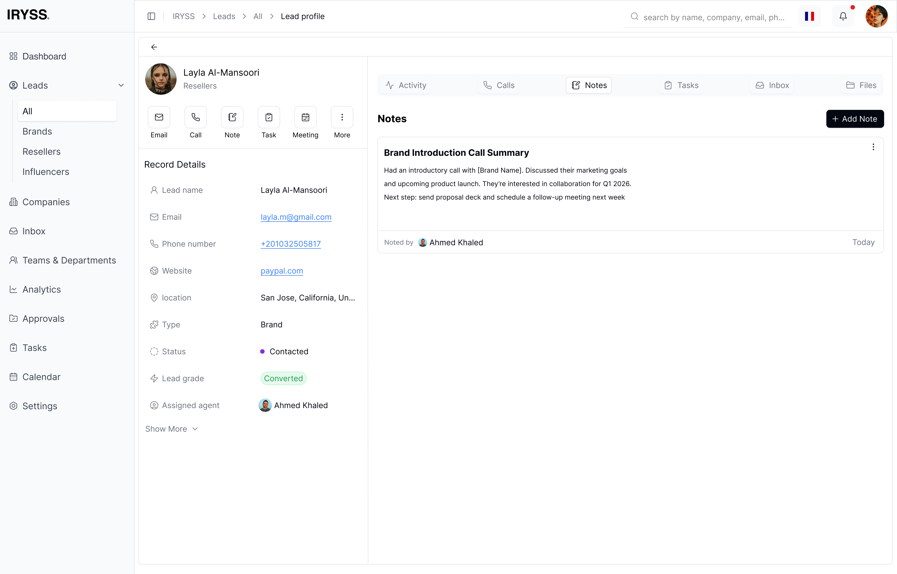

Inbox
Conversations were spread across WhatsApp, LinkedIn, Instagram and email, away from the lead they belonged to
One inbox for every channel, with the lead's details and quick actions next to the chat
Messages from every channel land in one inbox. Reps reply with saved templates, open the lead's details beside the chat to add a note, a task or a meeting, and filter by unread or by channel so no message is missed.


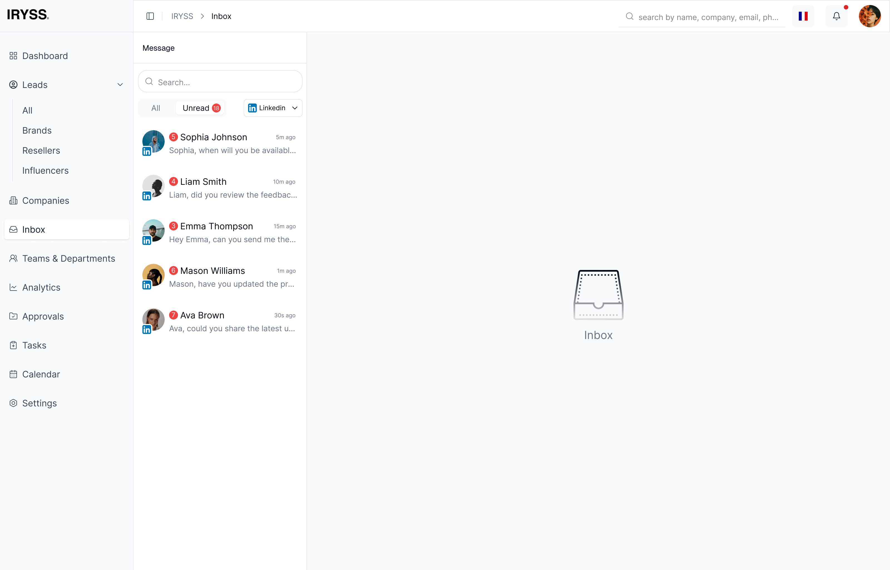
Import leads from a CSV
Teams bring leads in from spreadsheets, and one wrong column or value can fill the CRM with bad data
A four-step import that maps every column and catches invalid values before anything is saved
Reps upload a CSV and instantly see how many columns and rows it has. They match each column to a CRM field, fix anything flagged, like an invalid lead type, and preview the final table before importing.
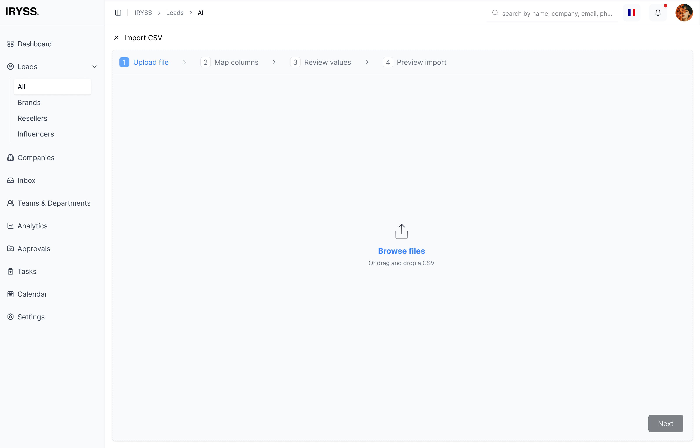
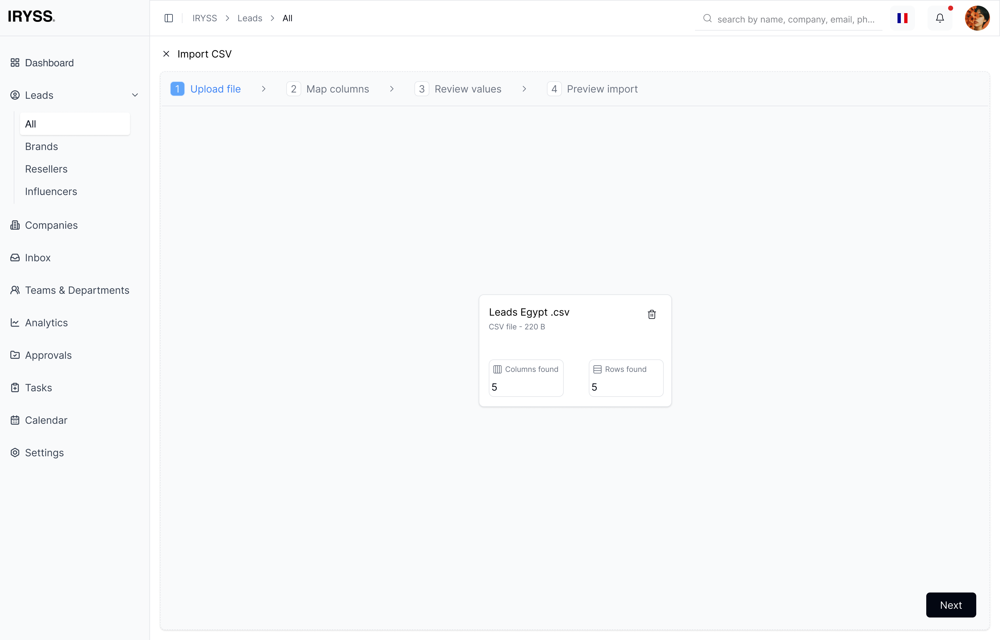
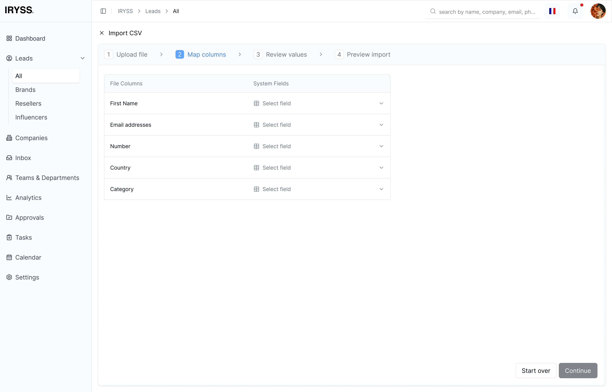
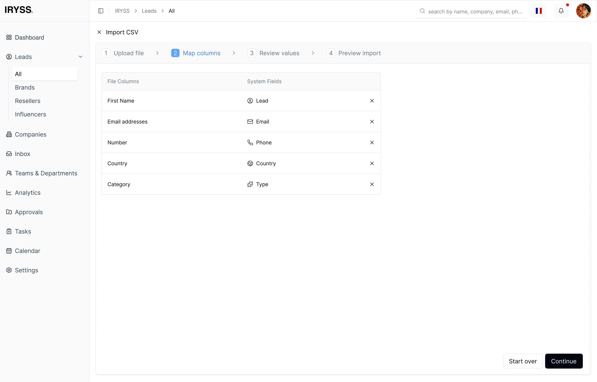
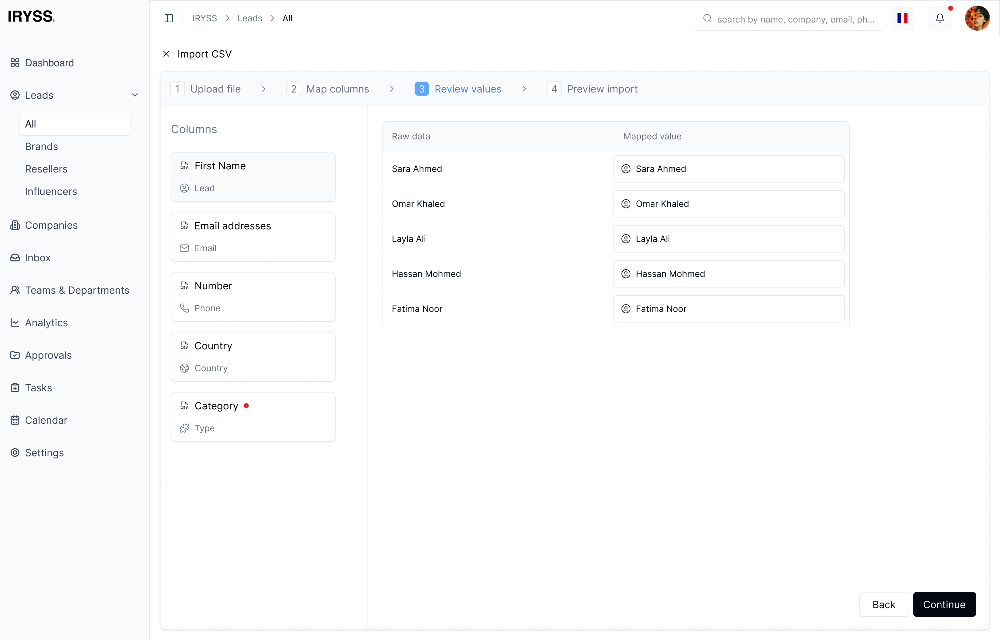
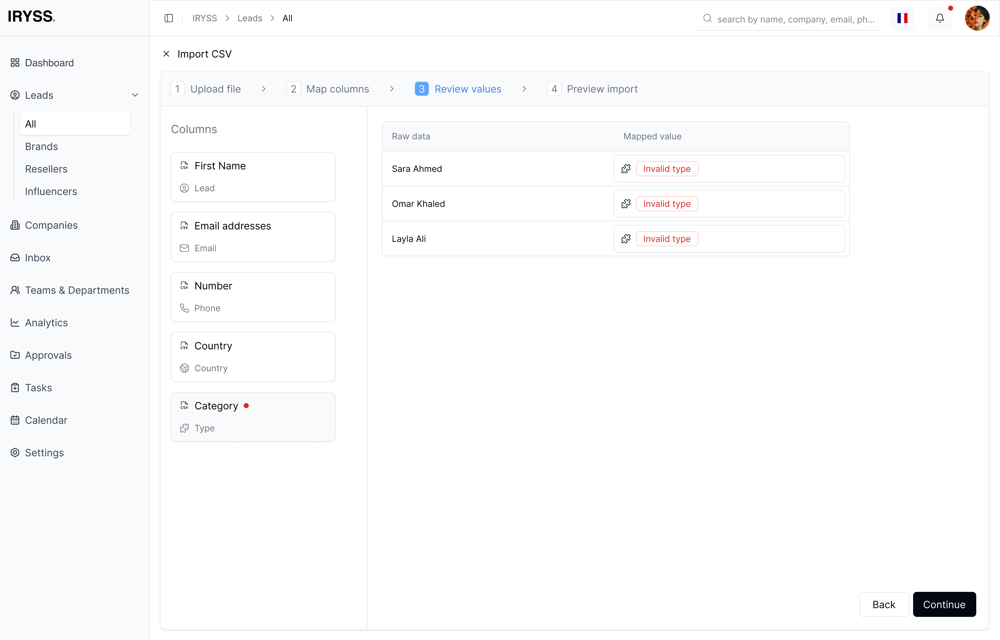
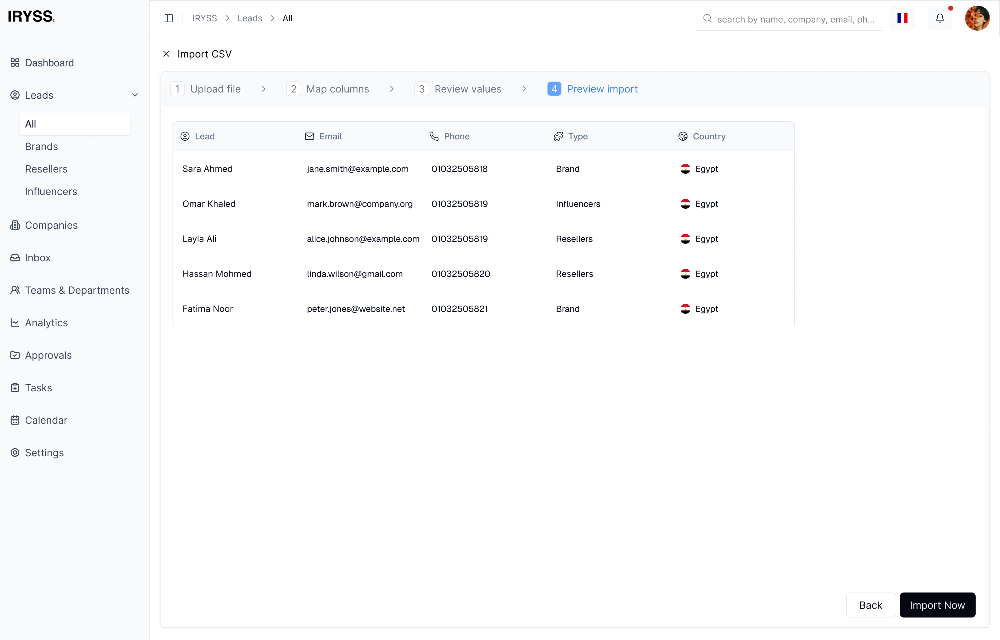
Design system
New patterns for every feature make a product harder to learn and harder to build
One component library, with every state documented, used by every screen
Every screen above is built from the same library: typography, colours and icons, then buttons, selects, data tables, calendars, avatars and more, each with all its states. A new feature starts from parts that already exist, so it looks and works like the rest of the product.


Impact & reception
- Ready to build: Every screen came with reusable components and clear specs, so the front end could be built quickly and match the design.
- Easy to grow: New features reuse patterns that already exist, so the product can grow without getting harder to learn, for users or for developers.
- One product, not separate screens: The lead table, profile, inbox and import all work the same way, so once a rep learns one, they know the rest.
Feedback from the client:


IRYSS was the first enterprise SaaS product I designed and shipped from start to finish, built on reusable components and workflows that work for different teams and roles.